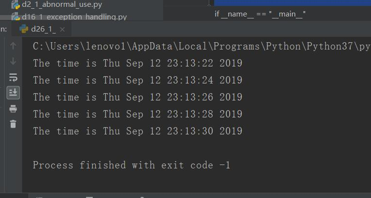
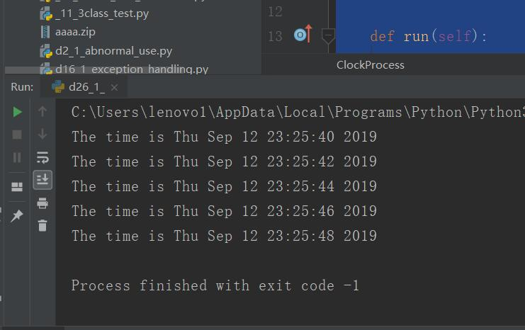
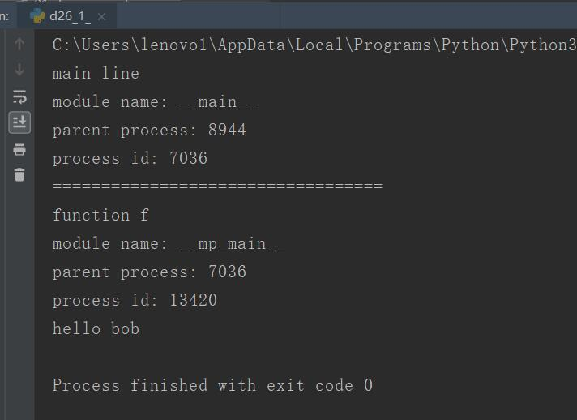

原文出处:本文由博客园博主心悦君兮君不知-睿提供。
原文连接:https://www.cnblogs.com/ruigege0000/p/11515703.html
原文连接:https://www.cnblogs.com/ruigege0000/p/11515703.html
一、线程替代方案
1.subprocess
（1）完全跳过线程，使用进程
（2）是派生进程的主要替代方案
（3）python2.4后引入
2.multiprocessing
（1）使用threading接口派生，使用子进程
（2）允许为多核或者多CPU派生进程，接口很threading非常相似
（3）python2.6
3.concurrent.futures
（1）新的异步执行模块
（2）人物级别的操作
（3）python3.2之后引入
4.多进程
（1）进程间通讯（InterprocessCommunication,IPC）
（2）进程之间无任何共享状态
（3）进程的创建
i.直接生成Process实例对象，举例
import multiprocessing
from time import sleep,ctime
def clock(interval):
while True:
print("The time is %s" % ctime())
sleep(interval)
if __name__ == "__main__":
p = multiprocessing.Process(target= clock,args=(2,))
p.start()
#从运行就可以看出来主进程已经结束了，但是子线程仍然在运行着
#和我们之前讲的线程，有一个最大区别就是线程在主进程里面，主进程结束了，子线程就结束了
#子线程从属于进程，子进程与进程之间是并列关系
#这里的程序停止，是我手动停止的
ii.派生子类
举例：重写子类，和我们之前讲的线程的差不多，这里民重写了最重要的两个函数，一个是初始化子类，继承父类的初始化，第二个就是运行函数
class ClockProcess(multiprocessing.Process):
def __init__(self,interval):
super().__init__()
self.interval = interval
def run(self):
while True:
print("The time is {0}".format(ctime()))
sleep(self.interval)
if __name__ == "__main__":
p2 = ClockProcess(2)
p2.start()
iii.在os中查看pid,ppid以及他们的关系
def info(title):
print(title)
print("module name:",__name__)
#得到父进程的id
print("parent process:",os.getppid())
#得到本身进程的id
print("process id:",os.getpid())
def f(name):
info("function f")
print("hello",name)
if __name__ == "__main__":
info("main line")
print("==================================")
p = multiprocessing.Process(target=f,args=("bob",))
p.start()
p.join()
解释：先调用了一个函数，然后又调用了一个嵌套函数的函数

四、源码
d26_1_multiprocess_exercise.py
https://github.com/ruigege66/Python_learning/blob/master/d26_1_multiprocess_exercise.py
2.CSDN：https://blog.csdn.net/weixin_44630050（心悦君兮君不知-睿）
3.博客园：https://www.cnblogs.com/ruigege0000/
4.欢迎关注微信公众号：傅里叶变换，个人公众号，仅用于学习交流，后台回复”礼包“，获取大数据学习资料